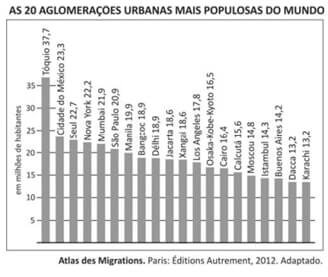
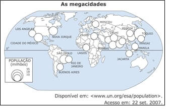
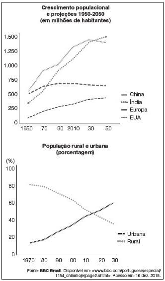

Conteúdo: Urbanização, cidades, Cidades globais; Êxodo rural;
Objetivo: Compreender o processo de urbanização mundial e as transformações do espaço geográfico decorrente do aumento da população urbana no mundo.
Questão 01
(FUVEST 2016) Sobre as 20 aglomerações urbanas mais populosas do mundo, conforme gráfico ao lado, é correto afirmar:

a) A maioria delas se encontra na Ásia, e, dentre estas, predominam as localizadas em países com economias desenvolvidas ou em desenvolvimento.
b) Mais de 50% delas encontram-se em países desenvolvidos, com alto PIB e alta distribuição de renda.
c) 50% delas estão localizadas na América Latina, em países subdesenvolvidos e pouco industrializados.
d) 25% delas estão em países da Europa Oriental, em que há boa distribuição de renda e serviços públicos essenciais gratuitos.
e) O segundo maior número dessas aglomerações encontra-se em países da África, as quais se caracterizam por baixo IDH.
Comentário:
Entre as vinte cidades apresentadas, 12 delas (60%) encontram-se na Ásia, sendo que a maioria está em países subdesenvolvidos. Apenas duas delas podem ser consideradas como de países desenvolvidos (Tóquio e o complexo Osaka-Kobe-Kyoto). A urbanização do mundo periférico se faz, na maior parte das vezes, de forma caótica e desordenada, gerando grandes problemas urbanísticos e sociais.
a) Correta. Das 20 aglomerações urbanas mais populosas do mundo, 12 (maioria) estão na Ásia e, dentre estas, predominam as localizadas em países com economias desenvolvidas (Tóquio e Osaka-Kobe- Kyoto no Japão e Seul na Coreia do Sul) ou em desenvolvimento (Mumbai, Délhi e Calcutá na Índia, Manila nas Filipinas, Bangcoc na Tailândia, Jacarta na Indonésia e Xangai na China).
b) Incorreta. Das 20 aglomerações urbanas mais populosas do mundo, somente 5 delas estão localizadas em países desenvolvidos com alto PIB: Tóquio e Osaka-Kobe-Kyoto no Japão, Seul na Coreia do Sul e Nova York e Los Angeles nos Estados Unidos; mesmo assim não são cidades que podem ser consideradas com alta distribuição de renda, pois também são cidades desiguais e com segregação socioespaciais.
c) Incorreta. Das 20 aglomerações urbanas mais populosas do mundo, somente 3 estão localizadas na América Latina (Cidade do México, São Paulo e Buenos Aires) e mesmo assim em economias em desenvolvimento e em países bastante industrializados.
d) Incorreta. Nenhuma aglomeração urbana está localizada na Europa Oriental socialista da época da Guerra Fria com boa distribuição de renda e serviços públicos essenciais gratuitos. Podemos até considerar Moscou e Istambul no Leste (ponto cardeal) da Europa, mesmo assim seriam somente 2 cidades (10%).
e) Incorreta. O segundo maior número dessas aglomerações encontra-se em países do continente americano. Na África temos apenas 1 cidade figurando entre as 20 aglomerações urbanas mais populosas do mundo: Cairo, no Egito.
Questão 02
(Unicamp 2016) O processo contemporâneo de metropolização do espaço e a grande metamorfose que vem ocorrendo em algumas metrópoles tem significado mudanças territoriais expressivas. Há intensificação e multiplicidade de fluxos de pessoas, mercadorias e informações, bem como crescimento do número de cidades conturbadas, onde não se distingue muito bem, na continuidade da imensa área construída, o limite municipal de cada uma delas. Tanto em São Paulo, por exemplo, como na Cidade do México, em Buenos Aires ou em Santiago, vamos encontrar a manifestação desse momento mais avançado da urbanização.
Adaptado de Sandra Lencioni, A metamorfose de São Paulo: o anúncio de um novo mundo de aglomerações difusas. Revista Paranaense de Desenvolvimento, Curitiba, n.120, p. 133-148, jan. /jun., 2011.)
Tendo em vista a metrópole contemporânea, é correto afirmar que se trata de uma:
a) única aglomeração, mas dispersa e fragmentada, onde fluxos imateriais regem um conjunto diferenciado de lugares.
b) única aglomeração, pois é compacta e coesa, onde fluxos imateriais regem um conjunto diferenciado de lugares.
c) metrópole compacta e coesa, organizada exclusivamente por uma estrutura hierárquica de fluxos imateriais.
d) metrópole dispersa e fragmentada, organizada exclusivamente por uma estrutura hierárquica de fluxos materiais.
A resposta correta está na alternativa a. A metrópole contemporânea, apesar de dispensa e fragmentado, constitui uma única aglomeração e é regida neste período por fluxos imateriais. As alternativas b e c são incorretas por afirmarem que a metrópole é coesa e compacta (metrópole típica do período fordista). A alternativa d está incorreta por afirmar que a metrópole é regida exclusivamente por fluxos materiais.
Questão 03
(ENEM 2015) A humanidade conhece, atualmente, um fenômeno espacial novo: pela primeira vez na história humana, a população urbana ultrapassa a rural no mundo. Todavia, a urbanização é diferenciada entre os continentes.
DURAND, M. F. et al. Atlas da mundialização: compreender o espaço mundial contemporâneo. São Paulo: Saraiva, 2009.
No texto, faz-se referência a um processo espacial de escala mundial. Um indicador das diferenças continentais desse processo espacial está presente em:
a) Orientação política de governos locais.
b) Composição religiosa de povos originais.
c) Tamanho desigual dos espaços ocupados.
d) Distribuição etária dos habitantes do território.
e) Grau de modernização de atividades econômicas.
A urbanização foi criada com a atração de mão de obra para locais que detinham industrias e novos aparatos técnicos. A modernização, além de significar infraestrutura, significa uma ideologia pregada sobre as cidades e o fenômeno urbano.
Questão 04
(UEL 2014) Segundo a Globalization and World Cities Study Group & Network, atualmente são reconhecidas mais de 50 cidades globais no planeta, divididas em três grupos, por grau de importância, Alfa, Beta e Gama.
(Adaptado de: INFOESCOLA. Cidades Globais. Disponível em: . Acesso em: 23 jun. 2013.)
Sobre o conceito de cidade global, assinale a alternativa correta.
a) Aplica-se à junção de duas ou mais metrópoles nacionais, com elevado tráfego urbano e aéreo internacionais.
b) Aplica-se às cidades em áreas de conurbação com os maiores Índices de Desenvolvimento Humano (IDH) do planeta.
c) Define-se por cidades que possuem elevados índices de emprego e renda e que atraem imigrantes de várias partes do mundo.
d) Refere-se aos centros de decisão e locais geográficos estratégicos, nos quais a economia mundial é planejada e administrada.
e) Refere-se a um conjunto de regiões metropolitanas, que formam áreas com maior número de população do planeta.
Colocar os comentários aqui.
Questão 05
(ENEM 2013) Embora haja dados comuns que dão unidade ao fenômeno da urbanização na África, na Ásia e na América Latina, os impactos são distintos em cada continente e mesmo dentro de cada país, ainda que as modernizações se deem com o mesmo conjunto de inovações.
ELIAS, D. Fim do século e urbanização no Brasil. Revista Ciência Geográfica, ano IV, n. 11, set/dez. 1988.
O texto aponta para a complexidade da urbanização nos diferentes contextos socioespaciais. Comparando a organização socioeconômica das regiões citadas, a unidade desse fenômeno é perceptível no aspecto.
a) espacial, em função do sistema integrado que envolve as cidades locais e globais.
b) cultural, em função da semelhança histórica e da condição de modernização econômica e política.
c) demográfico, em função da localização das maiores aglomerações urbanas e continuidade do fluxo campo-cidade.
d) territorial, em função da estrutura de organização e planejamento das cidades que atravessam as fronteiras nacionais.
e) econômico, em função da revolução agrícola que transformou o campo e a cidade e contribuiu para fixação do homem ao lugar.
Apesar de muitas cidades estarem afastadas e apresentarem características socioeconômicas e culturais distintas, podemos observar fenômenos correlatos como o demográfico, no qual certos lugares apresentam grandes aglomerações urbanas, atraídas por uma melhor infraestrutura, havendo o deslocamento das áreas rurais em direção às urbanas.
Questão 06
(UNICENTRO 2013) sobre o processo de urbanização mundial, assinale a alternativa INCORRETA.
a) O processo de industrialização original, também chamado de Revolução Industrial, foi o grande responsável pela intensificação da urbanização nos países desenvolvidos.
b) Tradicionalmente, a urbanização dos países desenvolvidos foi motivada pela liberação da mão de obra no campo, devida à mecanização agrícola bem como à atração exercida pelas cidades, com maior oferta de emprego, melhores salários e melhor atendimento à saúde e à educação.
c) Atualmente, o processo de urbanização tem menor intensidade nos países desenvolvidos, mas ainda é muito acelerado em muitos países em desenvolvimento e/ou subdesenvolvidos. Portanto, a população urbana vem crescendo mais nos países menos desenvolvidos do que nos países mais ricos e desenvolvidos.
d) O acelerado processo de urbanização em países menos desenvolvidos criou, nas cidades, problemas como ocupações irregulares, favelização de parte da população, infraestrutura de transporte e saneamento básico insuficiente, bem como problemas na oferta dos serviços públicos de saúde e educação.
e) Atualmente, a poluição do ar, do solo e da água, a poluição visual e sonora e o trânsito caótico são problemas que afetam principalmente as cidades médias dos países subdesenvolvidos. Esses problemas já foram resolvidos nas megalópoles e nas cidades globais, tanto nos países ricos, como nos países em desenvolvimento.
Questão 07
(ENEM 2009) As cidades não são entidades isoladas, mas interagem entre si e articulam-se de maneira cada vez mais complexa à medida que as funções urbanas e as atividades econômicas se diversificam e sua população cresce. Intensificam-se os fluxos de informação, pessoas, capital, mercadorias e serviços que ligam as cidades em redes urbanas.
Sobre esse processo de complexificação dos espaços urbanos é correto afirmar que:
a) a centralidade urbana das pequenas cidades é função da sua capacidade de captar o excedente agrícola das áreas circundantes e mantê-lo em seus estabelecimentos comerciais.
b) as grandes redes de supermercados organizam redes urbanas, pois seus esquemas de distribuição atacadista e varejista circulam pelas cidades e fortalecem sua centralidade.
c) as capitais nacionais são sempre as grandes metrópoles, pois concentram o poder de gestão sobre o território de um país, além de exportarem bens e serviços.
d) o desenvolvimento das técnicas de comunicação, transporte e gestão permitiu a formação de redes urbanas regionais e nacionais articuladas a redes internacionais e cidades globais.
e) a descentralização das atividades e serviços para cidades menores ocasiona perda de poder econômico e político das cidades hegemônicas das redes urbanas
Questão 08
(FUVEST 2008)

O mapa acima retrata a distribuição espacial, no planeta, de núcleos urbanos com mais de 10 milhões de habitantes, as megacidades. Sobre megacidades e os processos que as geraram, é correto afirmar que:
a) a maior do mundo, Tóquio, teve vertiginoso crescimento após a Segunda Guerra Mundial, em razão do expressivo desenvolvimento econômico do Japão nesse período.
b) as latino-americanas cresceram em razão das riquezas geradas por atividades primárias e do dinamismo econômico decorrente de suas funções portuárias.
c) a maior parte delas localiza-se em países de elevado PIB per capita, tendo sua origem ligada a índices expressivos de crescimento vegetativo e êxodo rural.
d) as localizadas em países de economia menos dinâmica cresceram lentamente devido à expansão do setor primário.
e) as localizadas no Oriente Médio são expressivas em número, em razão do desenvolvimento econômico gerado pelo petróleo.
Questão 09
(FTD)

Os gráficos apresentam projeções de algumas populações mundiais para as próximas décadas deste século. A comparação entre os dados indica tendências de:
a) aumento populacional desses países entre 2030 e 2050.
b) aumento populacional, principalmente em áreas urbanas.
c) redução populacional chinesa no período entre 2010 e 2050
d) aumento populacional, principalmente em áreas rurais.
e) aumento populacional europeu constante
Questão 10
(CPS) A vida nas grandes cidades gera a necessidade de lazeres periódicos que permitam a fuga da rotina estressante e da atmosfera poluída, ao contrário da vida no campo e em pequenas cidades, nas quais as pessoas ainda podem ter um contato diário direto e gratuito com o meio natural.
A cidade grande exige, assim, a produção de um novo espaço urbano com cinemas, teatros, centros culturais, estádios, parques naturais e casas secundárias em regiões próximas ou em estâncias turísticas mais distantes.
O equipamento de habitação para os lazeres supõe também uma nova concepção de casa e de sala de estar. Motiva a compra de objetos diversos, desde aparelhos de som e TV até jogos eletrônicos, brinquedos, livros, computador etc.
GEORGE, P. Geografia do consumo. São Paulo: Difel, 1971. p. 73
Com base na leitura do texto anterior e nas tendências geográficas atuais do mundo globalizado, são feitas as seguintes proposições. Analise-as.
I. A sociedade urbana tende ao crescimento das atividades terciárias, entre as quais estão as atividades ligadas a necessidades de lazer.
II. O habitante das grandes cidades, diferentemente do homem do campo, tem mais propensão ao turismo e a formas de diversão mercantilizadas.
III. As mudanças na organização do espaço geográfico, geradas pelas necessidades de lazer, atingem desde a escala micro (habitação) até escalas mais amplas, como a local, regional, nacional e mundial.
É correto o que se afirma em:
a) III, apenas.
b) I e II, apenas.
c) I e III, apenas.
d) II e III, apenas.
e) I, II e III.